СП 327.1325800.2017 «Стены наружные с лицевым кирпичным слоем. Правила проектиро»
О документе: разработчики, утверждение, регистрация, ключевые слова
СВОД ПРАВИЛ
СП 327.1325800.2017
Правила проектирования, эксплуатации и ремонта
Издание официальное
- 1 ИСПОЛНИТЕЛЬ -АО «НИЦ «Строительство» -Центральный научноисследовательский институт строительных конструкций им. В.А. Кучеренко (ЦНИИСК им. В.А. Кучеренко)
- 2 ВНЕСЕН Техническим комитетом по стандартизации ТК 465 «Строительство»
- 3 ПОДГОТОВЛЕН к утверждению Департаментом градостроительной деятельности и архитектуры Министерства строительства и жилищно-коммунального хозяйства Российской Федерации (Минстрой России)
- 4 УТВЕРЖДЕН Приказом Министерства строительства и жилищно-коммунального хозяйства Российской Федерации от 30 ноября 2017 г. № 1603/пр и введен в действие с 31 мая 2018 г.
- 5 ЗАРЕГИСТРИРОВАН Федеральным агентством по техническому регулированию и метрологии (Росстандарт)
6 ВВЕДЕН ВПЕРВЫЕ
В случае пересмотра (замены) или отмены настоящего свода правил соответствующее уведомление будет опубликовано в установленном порядке. Соответствующая информация, уведомление и тексты размещаются также в информационной системе общего пользования на официальном сайте разработчика (Минстрой России) в сети Интернет
© Минстрой России, 2017
Настоящий нормативный документ не может быть полностью или частично воспроизведен, тиражирован и распространен в качестве официального издания на территории Российской Федерации без разрешения Минстроя России
Дата введения 2018-05-31
УДК
Ключевые слова: каменные и армокаменные конструкции, расчетные характеристики материалов, расчетные сопротивления кладки, модули упругости и деформации кладки, упругие характеристики кладки, деформации ползучести и усадки, коэффициент линейного расширения, многослойные стены с лицевым слоем из кирпичной кладки, гибкие связи, трехслойные и двухслойные стены, прочность кладки на растяжение, вертикальные и горизонтальные деформационные швы, изгиб из плоскости, напряженно-деформированное состояние лицевого слоя, узел опирания лицевого слоя
| АО «НИЦ « Строительство» Заместитель генерального директора по научной работе д.т.н., профессор | А.И.Звездов |
|---|---|
| ЦНИИСК им. В.А.Кучеренко АО «НИЦ «Строительство» Директор д.т.н., профессор | И.И.Ведяков |
| Руководитель разработки заведующий лабораторией, к.т.н. | М.К.Ищук |
Введение
Настоящий свод правил разработан с учетом требований федеральных законов от 27 декабря 2002 г. № 184-ФЗ «О техническом регулировании», от 22 июня 2008 г. № 123-ФЗ «Технический регламент о требованиях пожарной безопасности», от 30 декабря 2009 г. № 384-ФЗ «Технический регламент о безопасности зданий и сооружений». Настоящий свод правил разработан в развитие СП 15.13330.2012 «СНиП II-22-81* Каменные и армокаменные конструкции».
Свод правил выполнен авторским коллективом АО «НИЦ «Строительство» ЦНИИСК им. В.А. Кучеренко (кандидаты техн. наук М.К. Ищук - руководитель темы, А.В. Грановский , М.О. Павлова ), инженеры Д.А. Алехин , Д.Ш. Файзов , И.Г. Фролова ); институтом ОАО ЦНИИЭПЖилища (канд. техн. наук Э.И.Киреева ); при участии ГП МО «Институт «МОСГРАЖДАНПРОЕКТ» ( А.Л. Алтухов ).
1Область применения
Настоящий свод правил распространяется на проектирование, эксплуатацию и ремонт многослойных наружных стен с лицевым слоем из кирпичной кладки для климатических условий России.
Настоящий свод правил не распространяется на проектирование зданий и сооружений, подверженных динамическим нагрузкам, возводимых на подрабатываемых территориях, вечномерзлых грунтах и в сейсмоопасных районах.
2Нормативные ссылки
В настоящем своде правил использованы нормативные ссылки на следующие документы:
ГОСТ 4.206-83 Cистема показателей качества продукции. Строительство. Материалы стеновые каменные. Номенклатура показателей
ГОСТ 4.210-79 Cистема показателей качества продукции. Строительство. Материалы керамические отделочные и облицовочные. Номенклатура показателей
ГОСТ 4.219-81 Cистема показателей качества продукции. Строительство. Материалы облицовочные из природного камня и блоки для их приготовления. Номенклатура показателей
ГОСТ 4.233-86 Cистема показателей качества продукции. Строительство. Растворы строительные. Номенклатура показателей
ГОСТ 379-2015 Кирпич, камни, блоки и плиты силикатные. Общие технические условия
ГОСТ 530-2012 Кирпич и камень керамические. Общие технические условия
ГОСТ 4001-2013 Камни стеновые из горных пород. Технические условия
ГОСТ 5802-86 Растворы строительные. Методы испытаний
ГОСТ 6133-99 Камни бетонные стеновые. Технические условия
ГОСТ 8462-85 Материалы стеновые. Методы определения пределов прочности при сжатии и изгибе
ГОСТ 9479-2011 Блоки из горных пород для производства облицовочных, архитектурно-строительных, мемориальных и других изделий. Технические условия
СТЕНЫ НАРУЖНЫЕ С ЛИЦЕВЫМ КИРПИЧНЫМ СЛОЕМ Правила проектирования, эксплуатации и ремонта
Exterior masonry walls with brick veneer. Rules of design, operation and repair
\_\_\_\_\_\_\_\_\_\_\_\_\_\_\_\_\_\_\_\_\_\_\_\_\_\_\_\_\_\_\_\_\_\_\_\_\_\_\_\_\_\_\_\_\_\_\_\_\_\_\_\_\_\_\_\_\_\_\_\_
ГОСТ 18143-72 Проволока из высоколегированной и коррозионностойкой и жаростойкой стали. Технические условия
ГОСТ 23279-2012 Сетки арматурные сварные для железобетонных конструкций и изделий. Общие технические условия
ГОСТ 25485-89 Бетоны ячеистые. Технические условия
ГОСТ 27751-2014 Надежность строительных конструкций и оснований. Основные положения
ГОСТ 28013-98 Растворы строительные. Общие технические условия
ГОСТ 31189-2015 Смеси сухие строительные. Классификация
- ГОСТ 31357-2007 Смеси сухие строительные на цементном вяжущем. Общие технические условия
ГОСТ 33929-2016 Полистиролбетон. Технические условия
- ГОСТ Р 54923-2012 Композитные гибкие связи для многослойных ограждающих конструкций. Технические условия
- СП 2.13130.2012 Системы противопожарной защиты. Обеспечение огнестойкости объектов защиты (с изменением № 1)
СП 15.13330.2012 «СНиП II-22-81* Каменные и армокаменные конструкции» (с изменениями № 1, № 2)
СП 20.13330.2016 «СНиП 2.01.07-85* Нагрузки и воздействия»
- СП 28.13330.2017 «СНиП 2.03.11-85 Защита строительных конструкций от коррозии»
СП 50.13330.2012 «СНиП 23-02-2003 Тепловая защита зданий»
- СП 63.13330.2012 «СНиП 52-01-2003 Бетонные и железобетонные конструкции. Основные положения» (с изменениями № 1, № 2, № 3)
СП 112.13330.2012 «СНиП 21-01-97* Пожарная безопасность зданий и сооружений»
Примечание- При пользовании настоящим сводом правил целесообразно проверить действие ссылочных документов в информационной системе общего пользования - на официальном сайте федерального органа исполнительной власти в сфере стандартизации в сети Интернет или по ежегодному информационному указателю «Национальные стандарты», который опубликован по состоянию на 1 января текущего года, и по выпускам ежемесячного информационного указателя «Национальные стандарты» за текущий год. Если заменен ссылочный документ, на который дана недатированная ссылка, то рекомендуется использовать действующую версию этого документа с учетом всех внесенных в данную версию изменений. Если заменен ссылочный документ, на который дана датированная ссылка, то рекомендуется использовать версию этого документа с указанным выше годом утверждения (принятия). Если после утверждения настоящего свода правил в ссылочный документ, на который дана датированная ссылка, внесено изменение, затрагивающее положение на которое дана ссылка, то это положение рекомендуется применять без учета данного изменения. Если ссылочный документ отменен без замены, то положение, в котором дана ссылка на него, рекомендуется применять в части, не затрагивающей эту ссылку. Сведения о действии сводов правил целесообразно проверить в Федеральном информационном фонде стандартов.
3Термины, определения и обозначения
В настоящем своде правил применены следующие термины с соответствующими определениями:
- 3.1каменная кладка
- Конструкция из природных или искусственных камней (кирпича, блоков), соединенных между собой раствором, клеевым составом или пастой.
- 3.2кирпич, камни и блоки
- Полнотелые и пустотелые кладочные изделия, удовлетворяющие требованиям соответствующих национальных стандартов.
- 3.3зимняя кладка
- Возведение каменных конструкций при отрицательных температурах наружного воздуха на растворах с противоморозными добавками, способом замораживания, с обогревом.
- 3.4многослойная (трехслойная) стена
- Конструкция, состоящая из двух слоев кладки и слоя из теплоизоляционных материалов, соединенных гибкими связями.
- 3.5двухслойная стена
- Конструкция, состоящая из основного и лицевого слоев, соединенных между собой сетками, связями или прокладными рядами.
- 3.6стена с вертикальными диафрагмами
- Трехслойная стена, состоящая из двух слоев кладки, соединенных вертикальными стенками из кирпичной или каменной кладки и утеплителем между слоями.
- 3.7перемычка
- Конструктивный элемент балочного или арочного типа, перекрывающий проем в стене и воспринимающий нагрузку от вышерасположенных конструкций.
- 3.8гибкая связь
- Связь между слоями стены, обеспечивающая их свободное перемещение относительно друг друга.
- 3.9лицевой слой
- Наружный слой многослойной кладки.
- 3.10несущие многослойные (трехслойные или двухслойные) стены с гибкими связями
- Многослойные стены с несущим внутренним слоем и ненесущим наружным (лицевым) слоем, который опирается на перекрытие или стальные кронштейны.
- 3.11несущие многослойные стены с жесткими связями
- Трехслойные стены с соединением слоев вертикальными кирпичными диафрагмами, двухслойные стены с прокладными рядами.
- 3.12ненесущие многослойные стены
- Трехслойные и двухслойные стены с гибкими связями, поэтажно опираемые на перекрытия. В настоящем своде правил применены следующие обозначения: As - площадь сечения продольной арматуры; Ared - площадь приведенного сечения; Ас, red площадь сжатой части приведенного сечения; Аnt - площадь вертикального сечения кладки по кирпичу или камню нетто (за вычетом площади сечения вертикальных швов); As,c - суммарная площадь сечения связей; As,m - суммарная площадь сечения продольных стержней связевых сеток; Е 0 - модуль упругости (начальный модуль деформаций) кладки; Е - модуль деформаций кладки; Еb - начальный модуль упругости бетона; Ns - суммарное горизонтальное растягивающее усилие в связях и продольных стержнях Г-образных сеток того же направления, расположенных на углу стены на участке высотой на один этаж; N(t) - горизонтальное растягивающее усилие от температурно-влажностных воздействий, определяемое численными методами или по инженерной методу, приведенному в приложении В; Nt,α - прочность узла анкеровки связи; R - расчетное сопротивление сжатию кладки; Rtb - расчетное сопротивление растяжению при изгибе кладки; Rtw - расчетное сопротивление кладки главным растягивающим напряжениям; Rsq - расчетное сопротивление при срезе кладки; Rs - расчетное сопротивление растяжению продольной арматуры; Rt - расчетное сопротивление кладки растяжению по перевязанному сечению; Rs,c - расчетное сопротивление растяжению связи; Rs,m - расчетное сопротивление растяжению продольных стержней связевых сеток; h нс -толщина наружного слоя кладки; hс ,нс -толщина сжатой зоны наружного слоя; h вс -толщина внутреннего слоя кладки; h д - толщина диафрагмы (расстояние в свету между наружным и внутренним слоями; m - коэффициент использования прочности слоя, к которому приводится сечение; mi - коэффициент использования прочности слоя, сечение которого приводится к другому слою; mg - коэффициент, учитывающий влияние длительной нагрузки; тc - коэффициент условий работы связей, зависящий от неравномерности включения в работу отдельных связей, зависящий от конструкции связи, наличия или отсутствия предварительного натяжения связей; у - расстояние от центра тяжести приведенного сечения до края сечения в сторону эксцентриситета; t - коэффициент линейного расширения кладки; сs - коэффициент условий работы продольных стержней, определяемый по таблице 6.1; γ cs,c - коэффициент условий работы связей, определяемый по таблице 6.1; сs 1 - коэффициент условий работы при расчете кладки на период оттаивания; са - коэффициент надежности материала; тр - коэффициент трения; - коэффициент продольного изгиба; 1 - коэффициент продольного изгиба при внецентренном сжатии элемента; - касательные напряжения, действующие в вертикальной плоскости, проходящей по границе кладки лицевого слоя с внутренним слоем стены и возникающие от совместного действия вертикальной нагрузки и температурно-влажностных деформаций. σ t - растягивающие напряжения
4Общие положения
- двухслойные стены с внутренним слоем из камней и блоков;
- трехслойные стены с соединением слоев гибкими связями и эффективным утеплителем между слоями;
- трехслойные стены с соединением слоев вертикальными диафрагмами и эффективным утеплителем между слоями.
Применение трехслойных стен с эффективным утеплителем в помещениях с влажным режимом эксплуатации допускается при условии нанесения на их внутренние поверхности пароизоляционного покрытия. Применение таких стен в помещениях с мокрым режимом эксплуатации, а также для наружных стен подвалов не допускается.
При использовании в качестве внутреннего слоя горючего утеплителя предел огнестойкости и класс конструктивной пожарной опасности строительных конструкций должны быть определены в условиях стандартных огневых испытаний или расчетноаналитическим методом.
Методики проведения огневых испытаний и расчетно-аналитические методы определения пределов огнестойкости и класса конструктивной пожарной опасности строительных конструкций устанавливаются нормативными документами по пожарной безопасности.
Правила эксплуатации и ремонта наружных стен с лицевым слоем из кирпичной кладки приведены в приложении Д.
5Материалы
- арматуру классов А240 и В500 с антикоррозионной защитой в соответствии с СП 28.13330 - для сетчатого армирования;
- коррозионностойкую проволоку по ГОСТ 18143 либо из композитных материалов согласно 5.4 - для гибких связей.
Для закладных деталей следует применять сталь в соответствии с СП 63.13330 с антикоррозионной защитой в соответствии с СП 28.13330.2017 (подраздел 5.5).
- с выделенным цилиндроконическим анкерным участком;
- цилиндрическим песчаным анкерным участком;
- двунаправленным периодическим профилем с номинальным диаметром 4-6 мм при рельефности не менее 1 мм.
Допускается применение других видов гибких связей из композитных материалов, в том числе сеток, при условии удовлетворения требований, приведенных ниже.
6Расчетные характеристики 6.1 Расчетные сопротивления
Таблица 6.1
| Вид материала | Вид материала | Вид материала | |
|---|---|---|---|
| Коэффициент условий работы | стальная арматура класса | стальная арматура класса | композитный |
| А240 | В500 | ||
| Продольная арматура растянутая γ cs | 0,8 | 0,7 | - |
| Связи на растворе марки 75 и выше γ cs,с | 0,9 | 0,8 | 0,5 |
Примечания
1 При применении других видов арматурных сталей расчетные сопротивления принимаются не выше, чем 270 МПа.
- 2 При расчете зимней кладки, выполненной способом замораживания, расчетные сопротивления арматуры следует принимать с дополнительным коэффициентом условий работы γ cs 1 = 0,5 при расчете на период оттаивания.
6.2Модули упругости и деформаций кладки, коэффициенты линейного расширения и трения
Деформационные характеристики кладки, учитывающие этапность ее возведения, приведены в приложении А.
Та б л и ц а 6.2
| Материал кладки | Коэффициент линейно- го расширения кладки t , град -1 |
|---|---|
| 1 Кирпич керамический полнотелый, пустотелый и керами- ческие камни | 0,0000065 |
| 2 Кирпич силикатный, камни и блоки бетонные и бутобетон | 0,00001 |
| 3 Природные камни, камни и блоки из ячеистых бетонов | 0,000008 |
| Примечание - Значения коэффициентов линейного расширения для кладки из полисти- ролбетонов и других материалов допускается принимать по опытным данным. | Примечание - Значения коэффициентов линейного расширения для кладки из полисти- ролбетонов и других материалов допускается принимать по опытным данным. |
6.2.4 Коэффициент трения μтр следует принимать по СП 15.13330.2012 (таблица
18).
7Типы связей между слоями
Гибкие связи классифицируют по следующим основным признакам:
- по материалу, из которого изготовлена связь;
- объединению отдельных связей сетками или стержнями;
- возможности регулирования уровня связи по высоте;
- возможности предварительного натяжения связи;
- конструкции - одно- и двухзвеньевые.
- а) Гибкие связи из нержавеющей стали диаметром 5 мм б) Гибкие связи из сварной сетки из нержавеющей стали диаметром 3 мм
- а) Гибкие связи с утолщением на концах
- б) Гибкие связи с песчаным наконечником
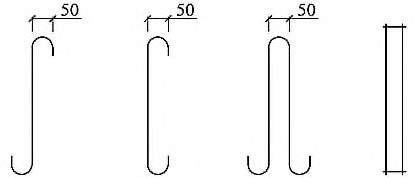
Рисунок 7.1 - Одиночные гибкие связи
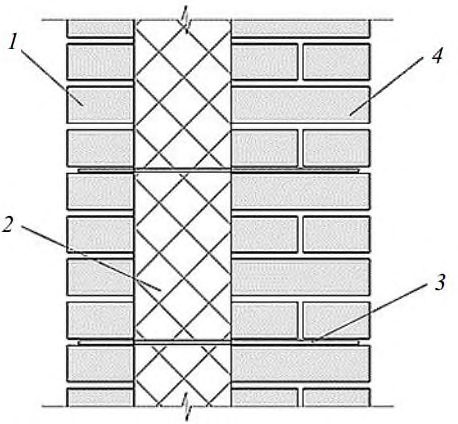
Рисунок 7.2 - Одиночные гибкие связи из композитных материалов 8 Основные типы многослойных наружных стен с лицевым слоем из кирпичной и каменной кладки
- 8.1 Многослойные стены с лицевым слоем из кирпичной кладки в зависимости от способа передачи на них нагрузки подразделяют:
- на несущие, воспринимающие нагрузку от собственного веса, веса перекрытий, балконов, лоджий, лестничных маршей и других прилегающих к ним конструкций и ветра;
- самонесущие, воспринимающие нагрузку только от собственного веса стены на всю высоту здания и ветра;
- ненесущие, воспринимающие нагрузку от собственного веса стены высотой, равной расстоянию между горизонтальными опорами, и ветра.
- 8.2 По количеству слоев многослойные стены подразделяют на двухслойные (рисунки 8.1б, 8.2) и трехслойные (рисунки 8.1а, 8.3).
- 8.3 По способу крепления лицевого слоя к внутреннему, многослойные стены подразделяют на стены с гибкими связями (рисунок 8.1а, 8.1б) и стены с жесткими связями (рисунки 8.2 и 8.3).
- 8.4Многослойные стены с гибкими связями могут быть двух- и трехслойными (рисунок 8.1).
Лицевой слой выполняют кладкой из кирпича или камня и крепят к внутреннему слою из кирпича, камней, блоков отдельными связями или сетками.
1 - лицевой слой стены; 2 утеплитель; 3 гибкие связи; 4 внутренний слой стены
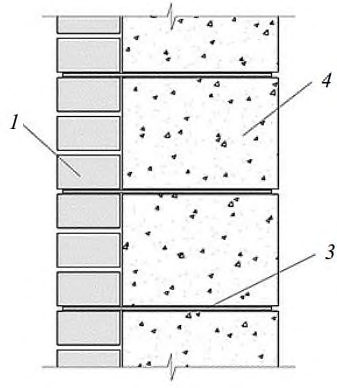
Рисунок 8.1 - Стены с гибкими связями между слоями
- 8.5 В двухслойных стенах с жесткими связями связь слоев осуществляется перевязкой кладки лицевого и внутреннего слоев (рисунок 8.2).
В уровне низа перевязочных кирпичей конструктивно укладывают связевые сетки. Эти сетки при соответствующем обосновании одновременно могут учитываться при расчете стены на центральное и внецентренное сжатие, растяжение и др.
Внутренний слой выполняют кладкой из камней, блоков, имеющих марку не менее М35 или класс бетона не менее В2,5.
Требования по морозостойкости кладки лицевого и внутреннего слоев приведены в СП 15.13330.2012 (таблица 1).
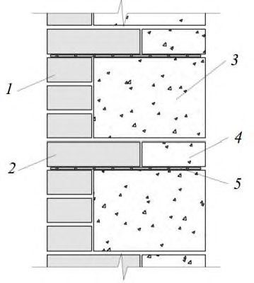
а) Двухслойные стены с горизон- б) Двухслойные стены с подрезкой блоков
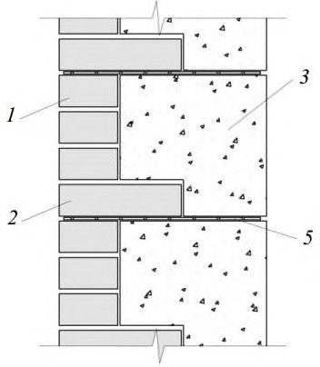
тальными рядами внутреннего слоя
1 - ложковые кирпичи лицевого слоя; 2 - перевязочные (тычковые) кирпичи лицевого слоя; 3 - рядовые блоки внутреннего слоя; 4 - доборные блоки внутреннего слоя; 5 - сет- ки
Рисунок 8.2 - Двухслойные стены с жесткими связями между слоями
8.6 В трехслойных стенах с жесткими связями связь слоев осуществляется вертикальными диафрагмами из кирпичной или каменной кладки (рисунок 8.3).
Кладка диафрагм конструктивно армируется стальными связями или из композитных материалов (рисунки 7.1, 7.2), располагаемыми не реже, чем через 40 см по высоте и заводимыми в лицевой и внутренний слои стены.
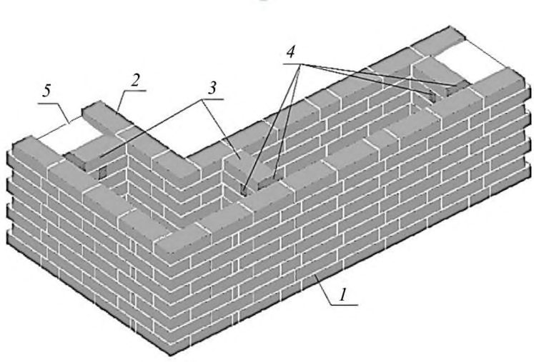
1 - лицевой слой стены; 2 - внутренний слой; 3 - вертикальные кирпичные диафрагмы; 4 - эффективный утеплитель; 5 - утеплитель заливочный или кладка из легкобетонных блоков, пеностекла и т.д.
Рисунок 8.3 - Трехслойные стены с жесткими связями между слоями (с вертикальными кирпичными диафрагмами)
8.7 Горизонтальные деформационные швы допускается выполнять как на всю толщину стены, так и только в пределах кладки лицевого слоя.
Пример опирания лицевого слоя на консольную часть плиты перекрытия в двухслойных стенах приведен рисунке 8.4 и в трехслойных - на рисунке 8.5. В обоих вариантах под плитой перекрытия в лицевом слое выполняют горизонтальный деформационный шов. В ненесущих стенах деформационный шов выполняют на всю толщину стены.
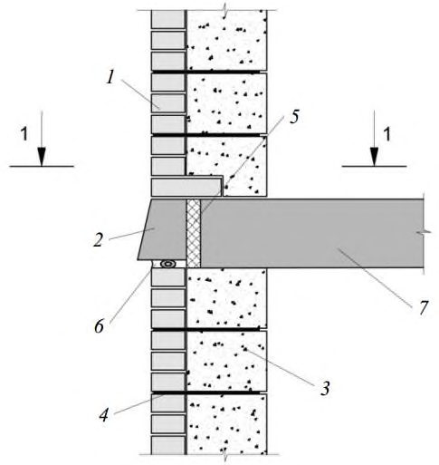
1 - лицевой слой стены; 2 - консоль плиты со скошенным торцом; 3 -внутренний слой; 4 - горизонтальные гибкие связи; 5 - термовкладыш; 6 - горизонтальный деформационный шов; 7 -монолитная железобетонная плита перекрытия
Рисунок 8.4 - Наружные двухслойные стены с лицевым слоем, опирающимся на плиту перекрытия
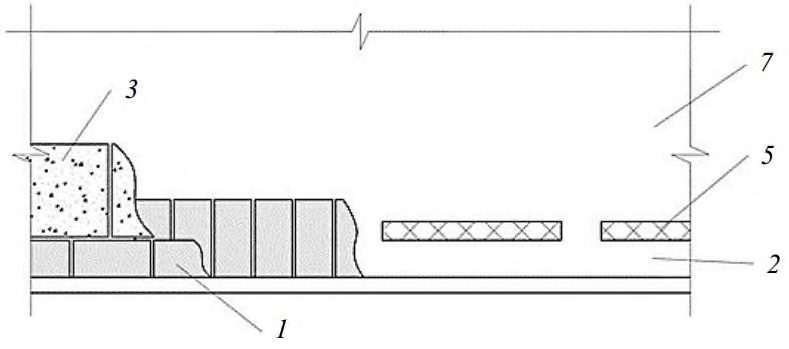
1 - лицевой слой стены; 2 - консоль плиты со скошенным торцом; 3 - внутренний слой; 4 - горизонтальные гибкие связи; 5 - термовкладыш; 6 - горизонтальный деформационный шов; 7 - монолитная железобетонная плита перекрытия; 8 - отлив из металлопластика; 9 - гидроизоляция; 10 - утеплитель; 11 - воздушная прослойка
Рисунок 8.5 - Наружные трехслойные стены с лицевым слоем, опирающимся на плиту перекрытия
Пример опирания лицевого слоя на кронштейны из нержавеющей стали заводского изготовления с регулируемым вылетом относительно плиты перекрытия в двухслойных стенах приведен на рисунке 8.6. В уровне низа опорной части кладки выполняют горизонтальный деформационный шов. В ненесущих стенах деформационный шов выполняют на всю толщину стены.
1 - лицевой слой; 2 - кронштейн из нержавеющей стали заводского изготовления; 3 -внутренний слой; 4 - гибкие связи; 5 - термовкладыш; 6 - горизонтальный деформационный шов; 7 - монолитная железобетонная плита перекрытия; 8 - опорная пластина из нержавеющей стали
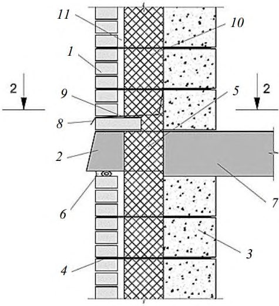
Рисунок 8.6 - Наружные двухслойные стены с лицевым слоем, опирающимся на кронштейны из нержавеющей стали заводского изготовления с регулируемым вылетом относительно плиты перекрытия
Пример опирания лицевого слоя на защемленную во внутреннем слое консольную железобетонную балку в трехслойных стенах приведен на рисунке 8.7.
Горизонтальный деформационный шов выполняют в лицевом слое под балкой.
1 - лицевой слой стены; 2 - железобетонная балка со скошенным торцом; 3 - внутренний слой; 4 - горизонтальные гибкие связи; 5 - термовкладыш; 6 - горизонтальный деформационный шов; 7 - сборная железобетонная плита перекрытия; 8 - утеплитель; 9 воздушная прослойка
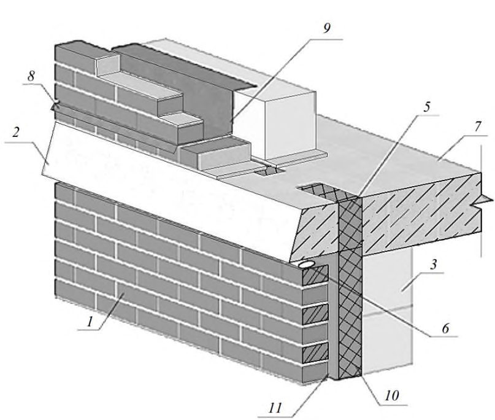
Рисунок 8.7 - Наружные трехслойные стены с лицевым слоем, опирающимся на железобетонную балку, защемленную в кладку внутреннего несущего слоя
Пример с консольной железобетонной балкой заводского изготовления, которая служит одновременно несъемной опалубкой при бетонировании плиты перекрытия, для трехслойной стены приведен на рисунке 8.8. В балке имеются выпуски арматуры, которые заводятся в плиту перекрытия. Горизонтальный деформационный шов выполняют в лицевом слое под балкой. Торец облицовывают керамической плиткой в заводских условиях.
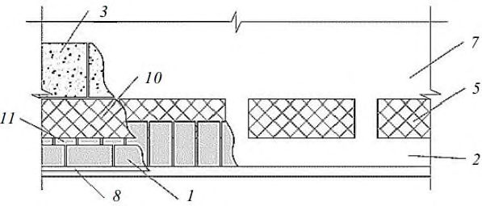
1 - лицевой слой стены; 2 - железобетонная балка заводского изготовления с выпусками арматуры, служащая несъемной опалубкой; 3 - внутренний слой; 4 горизонтальные гибкие связи; 5 - термовкладыш; 6 горизонтальный деформационный шов; 7 - монолитная железобетонная плита перекрытия; 8 - отлив из металлопластика; 9 - гидроизоляция; 10 -утеплитель; 11 воздушная прослойка; 12 - выпуски арматуры; 13 - керамическая плитка л о я
Рисунок 8.8 - Наружные трехслойные стены с лицевым слоем, опирающимся на плиту перекрытия с закрепленной к ней железобетонной консольной балкой заводского изготовления с заведеными в плиту выпусками арматуры
9Расчет многослойных стен на центральное и внецентренное сжатие
9.1Двухслойные несущие и самонесущие стены с внутренним слоем из камней и блоков
Расчет двухслойных стен с жесткими связями (рисунок 8.2) следует проводить:
- а) при центральном сжатии по формуле (10) СП 15.13330.2012;
- б) при внецентренном сжатии по формуле (13) СП 15.13330.2012.
В формулах (10) и (13) приведенных в СП 15.13330.2012, принимают: площадь приведенного сечения Ared , площадь сжатой части приведенного сечения Ac,red и расчетное сопротивление слоя, к которому приводится сечение, с учетом коэффициента использования его прочности m .
Коэффициенты использования прочности m и mi приведены в таблице 9.1, где m -коэффициент использования прочности слоя, к которому приводится сечение, mi - коэффициент использования прочности любого другого слоя.
Коэффициенты продольного изгиба , 1 и коэффициент mg следует определять по СП 15.13330.2012 (подразделы 7.2 -7.7) для материала внутреннего слоя, к которому приводится сечение. Приведение материала лицевого слоя к материалу внутреннего слоя проводят по СП 15.13330.2012 (подраздел 7.23).
В двухслойных стенах при жесткой связи слоев эксцентриситет продольной силы, направленной в сторону внутреннего слоя относительно оси, проходящей через центр тяжести приведенного сечения, не должен превышать 0,5 у ( у - расстояние от центра тяжести приведенного сечения до края сечения в сторону эксцентриситета).
Расчет по раскрытию горизонтальных швов лицевого слоя относительно оси приведенного сечения следует проводить по СП 15.13330.2012 (подраздел 8.3).
Эксцентриситет нагрузки в сторону облицовки не должен превышать 0,25 у . При эксцентриситете, направленном в сторону внутренней грани стены m m y е + - 1 1 0 , но не менее
0,1 у , расчет по формулам (10) - (13) СП 15.13330.2012 проводят как для однослойного сечения по материалу основного несущего слоя стены, при этом в расчет вводят всю площадь сечения элемента.
Таблица 9.1
| Коэффициенты использования прочности слоев | Коэффициенты использования прочности слоев | Коэффициенты использования прочности слоев | Коэффициенты использования прочности слоев | Коэффициенты использования прочности слоев | Коэффициенты использования прочности слоев | Коэффициенты использования прочности слоев | Коэффициенты использования прочности слоев | |
|---|---|---|---|---|---|---|---|---|
| Материал облицовочного слоя | Камни марок М25 и выше из бетонов на по- ристых запол- нителях и из поризованных бетонов | Камни марок М25 и выше из бетонов на по- ристых запол- нителях и из поризованных бетонов | Камни марок М25 и выше из автоклавных ячеистых бе- тонов | Камни марок М25 и выше из автоклавных ячеистых бе- тонов | Камни ма- рок М25 и выше из не- автоклав- ных ячеи- стых бето- нов | Камни ма- рок М25 и выше из не- автоклав- ных ячеи- стых бето- нов | Керамиче- ские кам- ни | Керамиче- ские кам- ни |
| m i | m | m i | m | m i | m | m i | m | |
| Лицевой кирпич пластиче- ского прессования высотой 65 мм | 1,0 | 0,9 | 1,0 | 0,8 | 1,0 | 0,7 | 1,0 | 0,8 |
| Лицевые керамические кам- ни с высотой 140 мм | 1,0 | 0,8 | - | - | - | - | - | - |
| Силикатный кирпич | 0,9 | 1,0 | 0,8 | 1,0 | 1,0 | 0,8 | 0,6 | 0,85 |
|---|---|---|---|---|---|---|---|---|
| Силикатные камни высотой 138 мм | - | - | - | - | - | - | 0,9 | 1,0 |
Помимо расчета на сжатие для стен с жестким соединением слоев следует выполнять проверку прочности на срез кладки лицевого слоя по границе с внутренним слоем стены в соответствии со следующим условием
где - касательные напряжения, действующие в вертикальной плоскости, проходящей по границе кладки лицевого слоя с внутренним слоем стены и возникающие от совместного действия вертикальной нагрузки и температурно-влажностных деформаций;
Rsq - расчетное сопротивление кладки горизонтальных прокладных рядов срезу, определяемое по СП 15.13330.2012 (подраздел 7.20).
В случае невыполнения условия (1) требуется устройство горизонтальных деформационных швов в лицевом слое кладки в соответствии с разделами 8, 11 и 17.
9.2Двух- и трехслойные несущие и самонесущие стены с гибкими связями между слоями
где h вн - толщина внутреннего слоя; h л.сл -толщина лицевого слоя.
9.3Трехслойные несущие и самонесущие стены с вертикальными диафрагмами
Кладка вертикальных кирпичных диафрагм, соединяющих слои кладки (рисунок 8.3), проверяется на срез по формуле (1), где - касательные напряжения, действующие в вертикальной плоскости, проходящей через диафрагму, и возникающие от совместного действия вертикальной нагрузки и температурно-влажностных деформаций.
При расчете на центральное и внецентренное сжатие по формулам (10) или (13) СП 15.13330.2012 рассматривают фрагмент стены двутаврового сечения (рисунок 9.1). Изгибающие моменты от внецентренного приложения нагрузки учитывают только от нагрузок, приложенных в пределах рассматриваемого этажа. Помимо вертикальных усилий следует учитывать изгибающие моменты, возникающие от температурных воздействий.
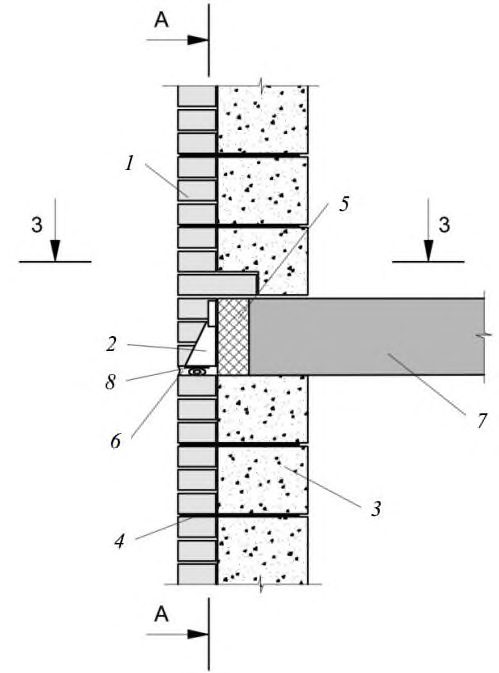
1 - внутренний слой; 2 -диафрагма; 3 - сжатая зона наружного слоя; h нс - толщина наружного слоя; hс ,нс - толщина сжатой зоны наружного слоя; h д - толщина диафрагмы (расстояние в свету между наружным и внутренним слоями); h вс - толщина внутреннего слоя
Рисунок 9.1 - Приведенное сечение рассчитываемого фрагмента стены
Коэффициенты продольного изгиба , 1 и коэффициент mg следует определять для сечения, проходящего по диафрагме.
В формулах (10) и (13) СП 15.13330.2012 принимают: площадь приведенного сечения Ared, площадь сжатой части приведенного сечения Ac,red и расчетное сопротивление слоя, к которому приводится сечение, с учетом коэффициента использования его прочности m.
Коэффициенты продольного изгиба , 1 и коэффициент mg следует определять по СП 15.13330.2012 (подразделы 7.2-7.7) для материала слоя, к которому приводится сечение, для сечения, проходящего по диафрагме.
Приведение материала наружного слоя и диафрагмы к материалу внутреннего слоя проводят по СП 15.13330.2012 (подраздел 7.23) с применением таблицы 9.1.
Высоту сжатой зоны определяют из условия равенства нулю суммы статических моментов эпюры вертикальных напряжений относительно оси приложения вертикального усилия. При этом принимают, что в предельном состоянии эпюра вертикальных напряжений является прямоугольной.
10Расчет кладки на растяжение по перевязанному сечению
Расчет кладки по перевязанному (вертикальному) сечению при действии растягивающих усилий в плоскости стены проводят из условий:
- для неармированной кладки:
N
- для армированной кладки:
N
где Rt - расчетное сопротивление кладки растяжению по перевязанному сечению, принимаемое СП 15.13330.2012 (таблица 12);
Rs - расчетное сопротивление растяжению продольной арматуры;
Ant - площадь вертикального сечения кладки нетто (за вычетом площади вертикальных растворных швов);
- As - площадь сечения продольной арматуры; γ cs - понижающий коэффициент условий работы продольной арматуры в кладке, определяемый по таблице 6.1;
N ( t ) - горизонтальное растягивающее усилие от температурно-влажностных воздействий, определяемое по приложению В, при расчетном перепаде температур, определяемом по приложению Б для холодного времени.
Расчет кладки на изгиб из плоскости при действии ветровой нагрузки проводят в соответствии с приложением Г.
11Назначение расстояний между вертикальными температурно-усадочными швами с учетом прочности кладки лицевого слоя растяжению
Расстояние между вертикальными температурно-усадочными швами в облицовочном слое двух- и трехслойных стен с гибкими связями назначают по таблице 20.1 с учетом требований разделов 17 и 20.
С целью увеличения расстояний между вертикальными температурно-усадочными швами, устраиваемыми в лицевом слое, по сравнению с приведенными в таблице 20.1, и оптимизации его армирования, проводят расчет кладки на растяжение по формулам (3) и (4) с подстановкой в них горизонтального растягивающего усилия N ( t ), возникающего от температурно-влажностных воздействий и определяемого по приложению В.
12Расчет расположенных на углах стен гибких связей по прочности на растяжение
С целью снижения расходов на установку и материалы для гибких связей и продольных стержней Г-образных связевых сеток (рисунок 12.1), устанавливаемых в лицевом слое на углу стены при отсутствии там вертикальных деформационных швов, подбор сечения связей и сеток проводят по результатам расчетов связей и сеток на растяжение от суммарного усилия от температурно-влажностных воздействий и ветровой нагрузки. а) Установка без вертикальных б) Установка в месте устройства деформационных швов деформационного шва 1 - угловая сетка; 2 гибкая связь; 3 - деформационный шов
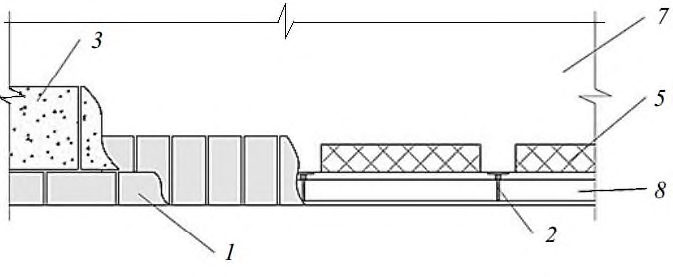
Рисунок 12.1 - Установка гибких связей и угловых связевых сеток
где Ns - суммарное горизонтальное растягивающее усилие в связях и продольных стержнях Г-образных сеток того же направления, расположенных на углу стены на участке высотой на один этаж, от температурно-влажностных воздействий при расчетном перепаде температур, определяемом в соответствии с приложением Б для теплого времени, и от ветровой нагрузки; mс - коэффициент условий работы связей, зависящий от неравномерности включения в работу отдельных связей, зависящий от конструкции связи, наличия или отсутствия предварительного натяжения связей. При отсутствии данных принимается mс = 0,5;
As,c , As,m - суммарная площадь сечения, соответственно, связей и продольных стержней связевых сеток;
Rs,c , Rs,m - расчетное сопротивление растяжению, соответственно, связей и продольных стержней связевых сеток; γ cs,c ,γ cs - понижающие коэффициенты условий работы, соответственно, связей и продольных стержневых связевых сеток, определяемые по таблице 6.1.
Прочность узла анкеровки связи Nt,a проверяют по формуле
N
При применении связей из композитных материалов прочность узла анкеровки связи Nt,a назначают в соответствии с ГОСТ Р 54923 и ГОСТ 23279 и с учетом коэффициента надежности по материалу γ ca = 3.
13Проектирование конструкций. Общие указания
- теплозащиты и влажностного режима в соответствии с СП 50.13330;
- прочности и устойчивости при ветровых нагрузках, температурно-влажностных воздействиях и в случаях перекоса, вызванного разными деформациями соседних несущих элементов каркаса и/или неравномерными осадками основания, - СП 15.13330, СП 20.13330;
- прочности и жесткости связей между слоями стен и связей, крепящих стены к несущим конструкциям здания;
- пожарной безопасности в соответствии с СП 112.13330;
- конструктивным требованиям СП 15.13330 и требованиям настоящего свода правил.
(таблица 1).
Марка кирпича и камня лицевого слоя должна приниматься не менее М100, для кладочного раствора - не менее М75.
Прочность кладочных материалов внутреннего слоя должна быть не менее М35 или класс бетона не менее В2,5.
Требования по конструкции сеток приведены в разделе 14.
Допускается армирование кладки сетками и отдельными стержнями из композитных материалов в соответствии с разделом 14.
Устойчивость к коррозии изделий из композитных материалов, находящихся в растворных швах с щелочной средой, следует определять в соответствии с ГОСТ Р 54923.
Материалы, применяемые для изготовления гибких связей и арматуры из стали, композитных материалов и др., должны соответствовать требованиям действующих нормативных документов, иметь сопроводительную документацию, подтверждающую их соответствие нормативным требованиям, включая паспорта качества и/или протоколы испытаний, и должны подвергаться входному контролю.
В соответствии с ГОСТ Р 54923 при эксплуатации в условиях холодного климата с температурой наиболее холодной пятидневки от минус 60 °С до минус 40 °С в расчет прочностных характеристик следует вводить понижающий коэффициент условий работы (хрупкости), равный 0,7.
Для лицевого слоя толщиной до 120 мм включительно следует преимущественно применять клинкерный или полнотелый кирпич (в том числе пустотностью до 13%), а также пустотелый кирпич с несквозными пустотами.
Допускается расшивка швов с заглублением до 1 см при применении в лицевом слое клинкерного или полнотелого кирпича (в том числе пустотностью до 13%), а также пустотелого кирпича с несквозными пустотами и пустотелого с вертикальными пустотами с толщиной наружной стенки не менее 20 мм. В остальных случаях швы выполняют заподлицо или с расшивкой внешним валиком.
Опирание лицевого слоя кладки на междуэтажные железобетонные перекрытия, консольные балки выполняют заподлицо с их торцом.
Свес лицевого слоя кладки со стальных опорных элементов не должен превышать 10 мм.
Крепление к лицевому слою стен с гибкими связями растяжек, вентиляционного и другого оборудования не допускается.
В этом случае помимо проверки прочности связей на вырыв и растяжение необходимо выполнять проверку связей по прочности на сдвиг, срез и смятие материала с учетом величины относительных перемещений слоев, определяемой с учетом этапности и длительности возведения по приложению А.
Во всех случаях следует выполнять конструктивные указания по устройству распределительных плит, горизонтальному армированию кладки и т.д. на участках приложения местной нагрузки в соответствии с СП 15.13330.
В целях снижения вероятности распространения огня по наружным стенам следует применять вертикальные и горизонтальные рассечки из негорючих материалов.
Рассечки следует располагать по периметру оконных и дверных проемов, в зоне вертикальных и горизонтальных деформационных швов, вокруг технологических отверстий, в зоне вентиляционных отверстий, имеющихся в лицевом слое кладки.
При наличии вентиляционных прослоек между утеплителем и кладкой рассечки следует устраивать на всю толщину полости между наружным и внутренним слоями кладки стены.
В зданиях и сооружениях степеней огнестойкости I-III, кроме малоэтажных (до трех этажей) жилых домов, не допускается выполнять отделку внешних поверхностей наружных стен из материалов групп горючести Г2-Г4 согласно требованиям СП 2.13130.2012 (пункт 5.2.3), а конструкция наружной стены не должна распространять горение.
14Требования по армированию кладки лицевого слоя трехслойных и двухслойных стен с гибкими связями
Требуемая суммарная площадь сечения продольной арматуры сеток, расположенных в нижней части стены высотой на 1 м, должна быть эквивалентна по прочности шести стержням диаметром 5 мм арматуры класса В500при расстоянии между вертикальными температурными швами, устанавливаемыми по таблице 20.1.
Выше 1 м от опоры армирование выполняют конструктивно сварными сетками с шагом по высоте не более 60 см, состоящими из двух продольных стержней диаметром 4 мм с поперечной арматурой диаметром 3 мм, располагаемой с шагом не более 100 мм. Кроме того, следует выполнять армирование горизонтальными сетками участков вблизи углов оконных проемов, в частности, под опорами перемычек.
Допускается армирование кладки сетками из композитных материалов, изготовленных по техническим условиям, утвержденным в соответствии с действующим законодательством и разработанным на основе экспериментальной проверки прочности и трещиностойкости армированной кладки.
На прямолинейных участках допускается укладывать сетки внахлест, длина перехлеста должна составлять не менее 40 см.
15Требования по армированию кладки лицевого слоя стен с вертикальными диафрагмами
Армирование каждого из слоев стены, соединенных вертикальными кирпичными диафрагмами, осуществляется сетками, располагаемыми по высоте не реже, чем через 1 м. Диафрагмы армируют сетками из арматуры диаметром не менее 3 мм или Z-образными стержнями диаметром не менее 5 мм с шагом по высоте не более 60 см.
16Требования по устройству гибких связей для крепления кладки лицевого слоя к внутреннему слою
Материалом связей могут служить стальная арматура, композитные материалы на основе углепластика, базальтового волокна, стеклопластика. Связи, выполненные из композитных материалов, должны выпускаться в соответствии с национальными стандартами, содержащими положения о возможности их применения в стенах с одним или более слоями из кирпичной или каменной кладки.
Одиночные связи, располагаемые в растворном шве, имеющие анкерное устройство в виде крюка, петли (рисунок 7.1а) или сварной сетки (рисунок 7.1б) следует устанавливать в шахматном порядке в количестве не менее 5 шт./м² . Одиночные связи с другими видами анкерных креплений, приведенными на рисунке 7.2, следует устанавливать в шахматном порядке в количестве не менее 8 шт./м² .
Шаг связевых сеток по высоте не должен превышать 60 см.
По периметру проемов, на углах здания и вблизи температурных вертикальных швов необходимо устанавливать дополнительные связи с шагом по вертикали и горизонтали не более 25 см.
Диаметр одиночных стальных связей, закрепленных в растворном шве с помощью загнутого конца (Z-, Г-, С-образные), должен быть не менее 5 мм. На концах такие связи должны иметь загибы в виде крюка диаметром 50 мм (рисунок 7.1а). Одиночные связи в виде сеток, а также связи, крепящиеся сваркой к расположенным в горизонтальных швах сеткам или стержням, допускается выполнять из стали диаметром 3 мм (рисунок 7.1б).
Применение в качестве гибких связей перфорированной ленты не допускается.
Одиночные связи должны отстоять от вертикальных растворных швов не менее чем на 2 см.
Связевые сетки следует выполнять из стальной арматуры, имеющей диаметр 3-5 мм. Требования к изготовлению сеток приведены в ГОСТ 23279.
Прочность кладочного раствора должна соответствовать марке не ниже М75.
Глубина заделки связей в горизонтальный растворный шов должна составлять не менее 80 мм.
Стальные связевые сетки, устанавливаемые в горизонтальный растворный шов кладки внутреннего слоя двухслойных стен, следует заводить на всю толщину стены с защитным слоем с каждой стороны по 15 мм. Сетки из композитных материалов заводят на всю толщину стены.
Связевые сетки из композитных материалов устанавливают на всю толщину наружного и внутреннего слоев кладки.
17Вертикальные деформационные швы в зданиях с двухслойными несущими стенами
Расстояния между температурно-усадочными швами следует устанавливать расчетом. Максимальные расстояния между температурно-усадочными швами допускается принимать для неармированных наружных стен без расчета по СП 15.13330.2012 (таблица 33). Принимают наименьшее из расстояний, полученных для материала основного конструктивного слоя или лицевого слоя.
Максимальные расстояния между температурно-усадочными швами допускается принимать для лицевого слоя без расчета по таблице 20.1.
Во внутреннем несущем слое стены максимальные расстояния между температурно-усадочными швами допускается назначать по СП 15.13330.2012 (таблица 33) как и для однослойной кладки, принимая в качестве основного материал внутреннего слоя.
Места расположения вертикальных температурно-усадочных швов во внутреннем слое должны совпадать с ближайшим деформационным швом в лицевом слое. При необходимости, в зависимости от конструктивной схемы зданий, в кладке стен следует предусматривать дополнительные температурно-усадочные швы.
18Горизонтальные деформационные швы в ненесущих наружных стенах
Расстояние между горизонтальными деформационными швами в стенах с лицевым слоем кладки толщиной 12 см не должны превышать высоты одного этажа или 3,5 м.
Расстояние между горизонтальными деформационными швами в стенах с лицевым слоем кладки толщиной не менее 25 см не должны превышать высоты двух этажей или 7 м.
Максимальный прогиб опорной части относительно узла закрепления не должен превышать 0,5 мм при действии расчетной нагрузки от веса опирающейся на него стены и других возможных воздействий. Технические характеристики элементов заводского изготовления и узлы их крепления к стенам или перекрытиям должны быть подтверждены экспериментальной проверкой.
Следует проводить проверку прогибов кронштейнов и их несущей способности в построечных условиях силами специализированной организации.
Плиты перекрытий и их консольные выступы должны рассчитываться на дополнительную нагрузку от опирания стен.
19Горизонтальные деформационные швы в лицевом слое несущих наружных стен
В несущих двух- и трехслойных стенах с гибкими связями следует выполнять деформационные горизонтальные швы в лицевом слое кладки.
Опирание лицевого слоя в этом случае проводят на плиту перекрытия, кронштейны из нержавеющей стали, консольные балки (рисунки 8.4-8.8). При расчете на центральное и внецентренное сжатие по формулам (10) и (13) СП 15.13330.2012 работа лицевого слоя в этом случае не учитывается.
20Вертикальные деформационные швы в лицевом слое кладки трехслойных наружных стен
Расстояния между вертикальными деформационными швами в лицевом слое трехслойных стен следует назначать из соблюдения условий не превышения прочности кладки лицевого слоя, связей и анкерных узлов на растяжение, усилий, возникающих от температурно-влажностных воздействий, либо назначать конструктивно в соответствии с таблицей 20.1.
Таблица 20.1
| Максимальные значения расстояний между вертикальными деформационными швами в лицевом (наружном) слое кладки наружных стен, м | Максимальные значения расстояний между вертикальными деформационными швами в лицевом (наружном) слое кладки наружных стен, м | Максимальные значения расстояний между вертикальными деформационными швами в лицевом (наружном) слое кладки наружных стен, м | Максимальные значения расстояний между вертикальными деформационными швами в лицевом (наружном) слое кладки наружных стен, м | |
|---|---|---|---|---|
| Форма участка стены из кера- мического кирпича, керами- ческих и природных камней | Форма участка стены из кера- мического кирпича, керами- ческих и природных камней | Форма участка стены из си- ликатного кирпича, бетон- ных, ячеистобетонных кам- ней | Форма участка стены из си- ликатного кирпича, бетон- ных, ячеистобетонных кам- ней | |
| Прямоли- нейная | L-образная | Прямолиней- ная | L-образная | |
| 80 | 10 | 5 | 7 | 5 |
| 60 | 14 | 7 | 8 | 6 |
| 40 | 18 | 9 | 9 | 7 |
Примечания
1 Расстояния между вертикальными деформационными швами назначены для случая конструктивного армирования кладки и установки гибких связей и угловых связевых сеток согласно разделам13 и 14 и расстоянию между горизонтальными деформационными швами не более 3,5 м.
2 В случае дополнительного армирования кладки расстояния между вертикальными швами назначают по результатам расчета.
3 Расстояния между вертикальными швами приведены для лицевого слоя толщиной 12 см. При толщине лицевого слоя 19-25 см данные значения принимают с коэффициентом 1,5, при толщине более 25 см - по СП 15.13330.2012 (таблица 33).
4 Изменение температур Δ t с определяют в соответствии с приложением Б с коэффициентом надежности по нагрузке γ f = 1 при допущении трещин с шириной раскрытия до 0,5 мм в местах концентрации напряжений. В остальных случаях принимается γ f =1,1 и приведенные в таблице значения умножают на коэффициент условий работы γ cr = 0,5.
С целью оптимизации расхода арматуры на армирование кладки лицевого слоя, устройства гибких связей, мест расположения и расстояний между вертикальными деформационными швами назначение последних допускается проводить на основании расчетов стен на температурно-влажностные воздействия в соответствии с разделами 10-12 и приложением В.
Независимо от результатов расчетов при назначении мест расположения вертикальных температурных швов рекомендуется соблюдать следующие правила:
- разбивать вертикальными деформационными швами ломанные в плане стеновые конструкций на линейные фрагменты, что в первую очередь относится к Z-образным в плане фрагментам и, особенно, при длине средней стены менее 2 м;
- располагать швы на углах, в местах пересечений стен, перепадах высот, вблизи проемов;
- при разбивке Z-образных в плане фрагментов деформационный шов назначать в наиболее длинной стене в месте пересечения со средней стеной фрагмента;
- вертикальные швы выполнять в остекленных лоджиях и балконах по границам оконных и дверных проемов;
- толщину шва принимать не менее 10 мм, в заполнении шва предусматривать упругие прокладки и атмосферостойкие мастики.
АПриложение А. Вертикальные перемещения наружного и внутреннего слоев многослойной кладки
А.1 Разность вертикальных перемещений слоев верхней точки стены Δ e , определяемую с момента окончания ее возведения, вычисляют по формуле
где ) ( e N - разность вертикальных перемещений слоев стены от вертикальной нагрузки и собственного веса;
) ( e sh - разность вертикальных перемещений слоев стены от усадки кладки.
А.2 Для вычисления деформаций кладки каждого из слоев применяют длительный модуль деформаций E дл, равный:
где ηплз - коэффициент для определения деформаций ползучести, развившихся с момента окончания роста нагрузки, вычисляемый по формуле
здесь t 1 - возраст кладки на момент окончания ее возведения (сут.); ψ - коэффициент, равный 1/сут.
С - коэффициент, учитывающий деформационные характеристики, равный:
0,46 - для кладки из керамических камней;
0,7 - для кладки из керамического кирпича пластического прессования;
1,1 - для кладки из силикатного кирпича.
А.3 Деформации усадки ε( sh ) кладки из силикатного кирпича и ячеистого бетона, развивающиеся во времени, допускается определять по формуле ε(
t возраст кладки (сут.)
А.4 Деформации набухания вследствие сорбционного увлажнения для кладки из керамического кирпича принимают равными нулю. Для кладки из силикатного кирпича и различного рода бетонных камней ( т ) принимают по СП 15.13330.
БПриложение Б. Назначение температуры лицевого слоя наружных стен с эффективным утеплителем при расчете на температурные воздействия
Б.1 При расчете на температурно-влажностные воздействия кладки лицевого слоя, гибких связей и расположенных на углах стен Г-образных связевых сеток изменение температур рассчитывают по СП 20.13330. При расчетах кладки лицевого слоя принимают изменение температур в холодное время Δ t c , а при расчете связей и связевых сеток - изменения температур в теплое время Δ tw .
Б.2 Нормативные значения средних температур по сечению лицевого (наружного) слоя толщиной до 12 см определяют по СП 20.13330, как для неотапливаемых зданий.
Б.3 Температуру замыкания конструкции t 0 допускается уточнять для каждого конкретного случая. При работе в тепляках начальные зимние температуры лицевого слоя следует принимать в соответствии с принятой технологией производства работ, но не ниже 5 о С.
Б.4 Расчетные значения температур вычисляют путем умножения полученных нормативных значений на коэффициент надежности, равный 1,1.
Б.5 В расчетах влажностные деформации ξ( sh ) задают с помощью эквивалентной температуры Т ( sh )экв, вычисляемой по формуле
Т
где α t - коэффициент линейного расширения кладки.
ВПриложение В. Инженерный метод оценки напряженно-деформированного состояния кладки лицевого слоя наружной стены с гибкими связями при температурно-влажностных воздействиях
- В.1 Прочность на растяжение кладки лицевого слоя наружных стен с гибкими связями проверяют по формулам (3) и (4). При значительных ветровых нагрузках, прогибах перекрытий и других опорных элементов, неравномерных деформациях каркаса, осадках фундаментов, усилия в связях и кладке определяют также с их учетом. В этом случае в формулы (3) и (4) подставляют суммарное горизонтальное растягивающее усилие N , вычисляемое по формуле
N = N
где N ( t ) - горизонтальное растягивающее усилие от температурно-влажностных воздействий;
N ( w ) - горизонтальное растягивающее усилие от ветровой нагрузки, определяемое из расчета по программам, реализующим численные методы либо по приближенным формулам;
- N ( е ) -от неравномерных деформаций каркаса, осадок фундаментов, определяемое из расчета по программам, реализующим численные методы либо по приближенным формулам.
- В.2 Горизонтальное растягивающее усилие в лицевом слое кладки, возникающее от температурно-влажностных воздействий N ( t ), определяют из расчета по программам, реализующим численные методы либо по следующей приближенной формуле
N
где А площадь вертикального сечения кладки лицевого слоя брутто (с учетом вертикальных швов) высотой 1 м;
- σ - горизонтальное растягивающее напряжение, возникающее в лицевом слое кладки от температурно-влажностных воздействий, вычисляемое по формуле
где Е к - модуль деформаций кладки, вычисляемый с учетом длительных деформаций по формуле
Е
здесь η - коэффициент, учитывающий влияние ползучести кладки, определяемый по СП 15.13330; α t - коэффициент линейного расширения кладки, определяемый по таблице 6.2;
- l безразмерный коэффициент, численно равный расчетной суммарной длине стен фрагментов L ,м;
Δ t - перепад температур, определяемый по приложению Б.
- В.3 Расчетную суммарную длину стен фрагментов L вычисляют по следующим формулам: для Г-образных фрагментов (рисунок В.1):
где Lx и Ly - длина стены от угла до деформационного шва соответственно по осям Х и Y ; для Z-образных и П-образных и фрагментов с двумя температурными швами (рисунки В.2, В.3):
где Lx 1 и Lx 2- длины стен на Z-образном участке от угла до деформационного шва.
- В.4 Расстояния между вертикальными деформационными швами следует назначать по таблице 20.1 либо с целью их оптимизации, не превышая следующее:
- прочность кладки лицевого слоя на растяжение;
- прочность связей и анкерных узлов на растяжение.
При назначении мест расположения вертикальных температурных швов следует придерживаться конструктивных требований, приведенных в разделе 20.
Рисунок В.1 - Схема деформаций лицевого слоя на Г-образном участке с внешним углом в холодное время при его возведении в теплое время
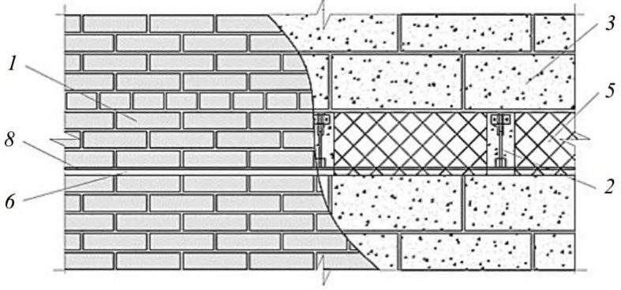
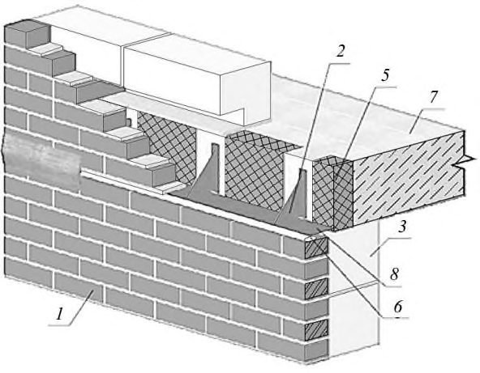
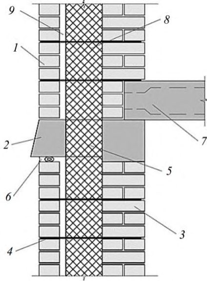
Рисунок В.2 - Схема деформаций лицевого слоя на Z-образном участке в холодное время при его возведении в теплое время
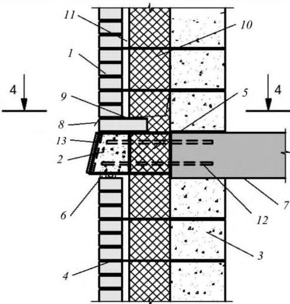
Рисунок В.3 - Схема деформаций лицевого слоя на П-образном участке с внешним углом в холодное время при его возведении в теплое время
ГПриложение Г. Общие положения по расчету наружных стен на ветровую нагрузку
Г.1 Напряженно-деформированное состояние кладки стен и усилия в гибких связях при действии ветровой нагрузки определяют с учетом совместной работы наружного и внутреннего слоев стены.
Г.2 При расчете по предельным усилиям принимают, что предельное состояние характеризуется достижением предельных усилий в кладке растянутой зоны. При расчете допускается образование трещин длиной не более 15 см на участках концентрации напряжений.
Расчетный изгибающий момент M простенков, не имеющих вертикальных опор, определяют из условия
М
где Rtb - расчетное сопротивление кладки растяжению при изгибе, учитывающее нелинейную работу кладки, определяемое по СП 15.13330.2012 (таблица 11);
W упр - упругий момент сопротивления поперечного сечения простенка.
В остальных случаях следует соблюдать условие:
где σ t -растягивающие напряжения.
Г.3 При расчете кладки по образованию трещин при изгибе из плоскости по формуле (33) СП 15.13330.2012следует учитывать возможность концентрации растягивающих напряжений на отдельных участках стен (например, по концам надоконных перемычек, углах проемов, местах установки связей и др.). В этой связи к полученным значениям краевых напряжений σ t следует вводить коэффициент учета возможной концентрации напряжений, принимаемый при отсутствии данных сравнительных расчетов равным 1,5.
Г.4 В случае невыполнения условий (Г.1) и (Г.2) значения изгибающих моментов, действующих в слоях кладки, могут быть снижены за счет таких конструктивных мероприятий, как увеличение количества гибких связей между слоями, в том числе в виде сеток, рациональное соотношение изгибных жесткостей лицевого и внутреннего слоев и др.
Г.5 Устойчивость простенка против опрокидывания в случае, когда равнодействующая всех сил выходит за пределы ядра сечения, определяют из условия
М
где М опр - суммарный опрокидывающий момент относительно оси возможного поворота опоры;
М удер - суммарный удерживающий момент относительно оси возможного поворота опоры; m удер - коэффициент условий работы при проверке устойчивости на сдвиг и опрокидывание. Данный коэффициент принимают равным 0,9 при опирании кладки непосредственно на плиту перекрытия и 0,8 - при опирании на слой гидроизоляции, отлив из жести, металлопластика и т.п.
Г.6 Устойчивость простенка против сдвига определяют из условия
N
где n удер - коэффициент надежности при проверке устойчивости;
N сдв; N удер - соответственно сдвигающие горизонтальные нагрузки и удерживающие силы.
ДПриложение Д. Правила эксплуатации и ремонта наружных стен с лицевым слоем из кирпичной кладки
Д.1 Техническое обслуживание и ремонт наружных стен из многослойной кладки предполагает:
- а) техническое обслуживание (содержание);
- б) осмотры;
- в) текущий ремонт;
- г) капитальный ремонт.
Д.2 Техническое обслуживание наружных многослойных стен включает работы по контролю за их состоянием, поддержанию в исправности, работоспособности.
Контроль за техническим состоянием следует осуществлять путем проведения плановых и внеплановых осмотров.
Д.3 Результаты осмотров следует отражать в специальных документах по учету технического состояния наружных многослойных стен: журналах, паспортах, актах.
Обнаруженные в ходе осмотра дефекты должны быть обследованы специализированой организацией с выдачей заключения и рекомендациями по ремонту и дальнейшей безопасной эксплуатации.
Д.4 Организация по обслуживанию жилищного фонда должна принимать срочные меры по обеспечению безопасности людей, предупреждению дальнейшего развития деформаций, а также немедленно информировать о случившемся собственника или уполномоченное им лицо.
Д.5 Организация по обслуживанию жилищного фонда должна обеспечивать:
- заданный температурно-влажностный режим внутри здания;
- исправное состояние стен для восприятия нагрузок (конструктивную прочность);
- устранение повреждений стен по мере выявления, не допуская их дальнейшего развития;
- теплозащиту, влагозащиту и звукоизоляцию наружных стен.
Д.6 Инженерно-технические работники организации по обслуживанию жилищного фонда должны знать конструкции наружных стен и нормативные требования к ним.
Д.7 Не допускается без соответствующего заключения специализированной организации поверхности неоштукатуренных стен с выветрившейся кладкой облицовывать плиткой или оштукатуривать цементным или сложным раствором, т.к. это может препятствовать выходу влаги из стены и способствовать еще большему размораживанию кладки.
Д.8 Все выступающие части фасадов должны иметь покрытия из стойких к атмосферным воздействиям материалов, имеющие уклон не менее 3% и вынос от стены не менее 50 мм.
Д.9 Для поддержания фасадов в исправном состоянии выполняют своевременную окраску.
Д.10 Повреждения, вызвавшие снижение водозащитных и теплотехнических свойств наружных ограждающих конструкций, звукоизоляции и других показателей, которые не могут быть устранены при текущем ремонте и по заключению специализированной организации, не требуют немедленного устранения, следует устранять при капитальном ремонте или реконструкции по соответствующему проекту.
Д.11 Фасады зданий следует очищать и промывать в сроки, установленные в зависимости от материала, состояния поверхностей зданий (степень загрязнения, наличие выколов, разрушение покрытия) и условий эксплуатации.
Д.12 Устройство в наружных стенах дополнительных проемов, отверстий, ведущее к нарушению прочности или разрушению несущих конструкций стен, нарушению в работе инженерных систем и/или установленного на нем оборудования, ухудшению сохранности и внешнего вида фасадов, нарушению противопожарных устройств, не допускается.
Д.13 Установка холодильного, вентиляционного оборудования, растяжек от проводов, рекламы и т.п. допускается только без передачи нагрузки на лицевой слой кладки с применением специальных приспособлений.
Предпочтительным является передача нагрузки на несущие элементы каркаса. При этом следует обращать внимание на недопущение снижения пожарной безопасности и эксплуатационных качеств стены вследствие нарушения противопожарных рассечек, теплоизоляции и звукоизоляции.
Д.14 Работы по комплексной защите вертикальных и горизонтальных деформационных швов стен от увлажнения атмосферными осадками и промерзания следует выполнять с интервалом шесть - восемь лет.
Неисправности герметизации деформационных швов необходимо устранять по мере выявления, не допуская дальнейшего ухудшения герметизации.
Контроль за состоянием герметизации деформационных швов и сопряжений по периметру оконных и дверных блоков следует проводить: первый - через три года после герметизации, последующие - через пять лет.
Д.15 Неисправности звукоизоляции наружных многослойных стен необходимо своевременно выявлять и устранять при текущем и капитальном ремонтах.
Д.16 Рекомендации по ремонту кладки лицевого слоя наружных многослойных стен
Д.16.1 Работы по ремонту лицевого слоя наружных стен из многослойной кладки проводят по проекту, разработанному по результатам обследования специализированной организацией.
Д.16.2 К числу основных работ по ремонту лицевого слоя из кирпичной и каменной кладки относятся следующие:
- устройство вертикальных и горизонтальных деформационных швов при их отсутствии, недостаточном количестве;
- устройство дополнительных связей между наружным и внутренним слоями стены;
- ремонт кладки на участках ее размораживания и выветривания;
- ремонт кладки с трещинами;
- ремонт гидро-, тепло- и звукоизоляции вертикальных и горизонтальных деформационных швов.
Д.16.3 Устройство вертикальных деформационных швов при их отсутствии, недостаточном количестве или некачественном исполнении осуществляют на участках, определяемых в соответствии с разделами 17 и 20.
Конструкцию швов назначают по конструктивным указаниям настоящего свода правил.
Вертикальные швы устраивают на участках вблизи образования вертикальных трещин в кладке лицевого слоя, являющимися естественными деформационными швами. При этом выполняют ремонт кладки с самой трещиной. Тип ремонта зависит от характера, ширины раскрытия тещины и проводится в соответствии с указаниями, приведенными ниже.
Д.16.4 В случае отсутствия связей, недостаточного их количества, низкого качества изготовления или недостаточной несущей способности, повреждения в процессе эксплуатации вследствие коррозии, механических воздействий, воздействия высоких температур, а также прямого огневого воздействия при пожаре проводят установку дополнительных связей.
Тип и количество связей определяют в соответствие с разделом 16 и с учетом технологических особенностей их установки.
Д.16.5 Ремонт кладки на участках ее размораживания и выветривания проводят различными методами в зависимости от степени повреждения и причин, вызвавших дефекты. Кроме того, следует учитывать требования по отделке фасада.
При разрушении внешнего слоя кирпича, камня на глубину до 1-3 см выполняют его докомпановку специальными составами.
При большей глубине разрушения кирпича и камня лицевого слоя проводят перекладку кладки с армированием в горизонтальных швах в соответствии с указаниями раздела 14 и устройством связей с основным слоем стены в соответствии с настоящим сводом правил и технологическими особенностями установки ремонтных связей.
Д.16.6 При ремонте кладки с трещинами следует учитывать вероятность повторного раскрытия трещин либо образования ее на соседнем участке в случае, если не будут устранены причины ее образования.
Ремонт кладки с трещинами проводят указанными ниже методами в зависимости от характера трещины, причин ее образования и ширины раскрытия и требований к отделке фасада:
- путем перекладки кладки с соблюдением требований к перевязке кладки и конструктивному армированию по СП 15.13330;
- путем расшивки и заполнения трещины стойким к атмосферным воздействиям эластичным материалом и укладкой в расчищенные от раствора горизонтальные швы стальной арматуры, перекрывающей трещины.
Библиография
- [1] Федеральный закон от 22 июля 2008 г. № 123-ФЗ «Технический регламент о требованиях пожарной безопасности»